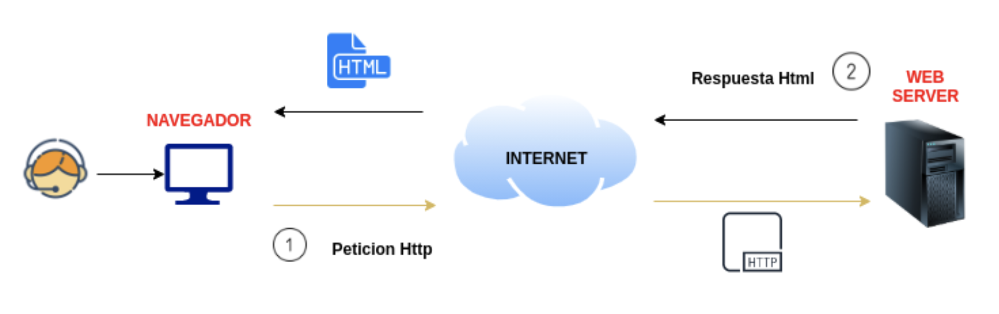
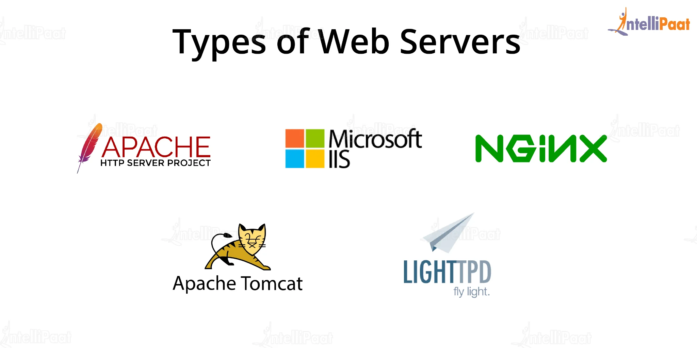
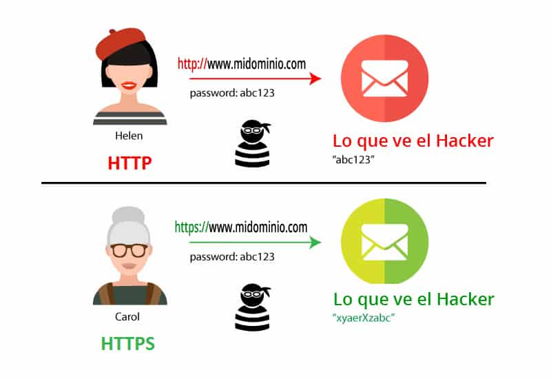

Refrescando conceptos de Linux y terminal
En este módulo trabajarás constantemente en Linux. Antes de instalar y configurar servidores web, repasamos los comandos esenciales para manejar el sistema desde la terminal.
- pwd: muestra la ruta actual.
- ls: lista archivos de un directorio.
- cd: permite cambiar de carpeta.
- sudo: ejecuta tareas administrativas.
- nano / vim: editar archivos de texto.
# Navegar y editar una página en Apache
pwd
cd /var/www/html
ls -l
sudo nano index.html¿Qué es un servidor web?
Un servidor web recibe peticiones de los navegadores y devuelve páginas, imágenes o recursos. Es la base de cualquier aplicación web.
- Entrega contenido mediante HTTP/HTTPS.
- Gestiona múltiples peticiones simultáneamente.
- Almacena los archivos públicos del sitio (DocumentRoot).

Tipos de servidores web
Existen múltiples servidores web, todos válidos pero con propósitos diferentes.
- Apache: robusto, modular, muy usado.
- Nginx: excelente rendimiento en archivos estáticos.
- IIS: integrado en Windows Server.

Instalación de Apache en Windows (XAMPP)
En Windows, la forma más sencilla de instalar Apache es mediante XAMPP, que incluye Apache, MySQL y PHP. Es una solución todo en uno que facilita el desarrollo local sin complicaciones.
URL de descarga: https://www.apachefriends.org/download.html
- Descarga desde apachefriends.org
- Instalación guiada
- Carpeta pública:
C:\xampp\htdocs
# Crear una página en XAMPP
C:\xampp\htdocs\prueba.html
<h1>Apache funciona en Windows</h1>Instalación de Apache en macOS (MAMP)
En MAC existe una solución similar llamada MAMP. Es similar a XAMPP pero diseñada para el sistema operativo macOS.
URL de descarga: https://www.mamp.info/en/downloads/
# Crear una página en MAMP
/Applications/MAMP/htdocs/prueba.html
<h1>Apache funciona en macOS</h1>Instalar Apache en Linux (Ubuntu/Debian)
Apache se instala fácilmente mediante el gestor de paquetes del sistema.
sudo apt update && sudo apt install apache2- Carpeta pública:
/var/www/html - Control del servicio:
systemctl
# Probar Apache en Linux
echo "<h1>Hola desde Linux</h1>" | sudo tee /var/www/html/prueba.htmlProtocolos HTTP y HTTPS
- HTTP (HyperText Transfer Protocol): protocolo de comunicación para la web. Es sencillo pero no seguro, ya que transmite datos en texto plano.
- HTTPS (HTTP Secure): versión segura de HTTP que utiliza TLS para cifrar la comunicación entre el navegador y el servidor, protegiendo la confidencialidad e integridad de los datos.
- Los puertos por defecto son:
- HTTP → puerto 80
- HTTPS → puerto 443
- HTTPS usa criptografía simétrica + asimétrica
- Requiere certificado digital
